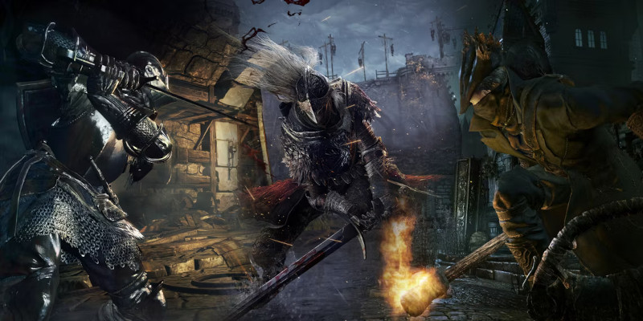

Soulslike

O que é?
Soulslike é um subgênero de jogos eletrônicos de RPG de ação conhecidos por possuírem altos níveis de dificuldade e ênfase na narrativa ambiental. Ele teve sua origem na série de jogos Souls da FromSoftware, cujos temas e mecânicas inspiraram diretamente vários outros jogos semelhantes.